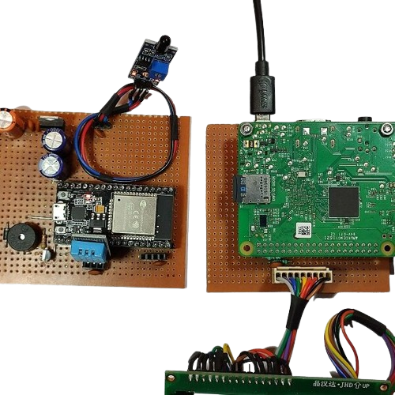

Temp, Pressure Monitoring Raspberry Pi
Monitoring temperature and pressure using a Raspberry Pi can be a useful project for various applications, such as weather stations, environmental monitoring systems, or industrial process control. Here's a general guide on how to set up temperature and pressure monitoring using Raspberry Pi:
Components Needed:
Raspberry Pi: Any model with GPIO pins will work, such as Raspberry Pi 3B, 4B, or Zero W.
Temperature Sensor: For example, a DS18B20 digital temperature sensor.
Pressure Sensor: For example, an BMP280 or BME280 sensor.
Breadboard and Jumper Wires: For connecting sensors to the Raspberry Pi.
MicroSD Card: With Raspberry Pi OS (formerly Raspbian) installed.
Optional: Enclosure, display, and additional sensors or peripherals.